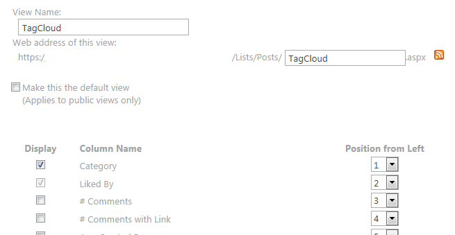
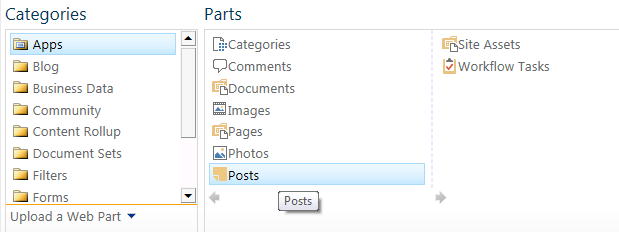

Introduction
One of the most missed features in SharePoint Blog Template (even in SharePoint 2013) is a Tag Cloud webpart to represent information about Posts Categories.
Until now, I usually get done this task by using XSLT and this Waldek’s post
But, with SharePoint 2013, we have available CSR – Client Side Rendering and we can use it to achieve our Tag (Categories) Cloud Web Part.
Click through
Create a new View in Posts lists. We will name this view
TagCloudand select only Categories field We will add Posts app or webpart to our page. 
We will edit this webpart to assign “TagCloud” view in it.
We will create js file to use CSR to customize this view
So, create myCSRTagCloud.js file:
1
2
3
4
5
6
7
8
9
10
11
12
13
14
15
16
17
18
19
20
21
22
23
24
25
26
27
28
29
30
31
32
33
34
35
36
37
38
39
40
41
42
43
44
45
46
47
48
49
50
51
52
53
54
55
56
57
58
59
60
61
62
63
64
65
66
67
68
69
70
71
72
73
74
75
76
77
78
79
80
81
82
83
84
85
86
87
88
89(function () {
ExecuteOrDelayUntilScriptLoaded(_registerBlogsBodyViewTemplate, 'clienttemplates.js');
})();
function _registerBlogsBodyViewTemplate()
{
// Initialize the variable that store the objects.
var overrideCtx = {};
overrideCtx.Templates = {};
overrideCtx.Templates.View = ViewOverrideFunc;
// Register the template overrides.
SPClientTemplates.TemplateManager.RegisterTemplateOverrides(overrideCtx);
}
// This function builds the output for the view template
function ViewOverrideFunc(ctx) {
if (ctx.view != "{VIEWGUID}") {
return RenderViewTemplate(ctx);
}
var listData = ctx.ListData;
/* This is sctricly neccesary to avoid duplicate content */
if (ctx.Templates.Body == '') {
return RenderViewTemplate(ctx);
}
var finalHtml ='';
if (ctx.view == "{VIEWGUID}") {
var categoryArray = new Array();
for (var idx in listData.Row) {
var listItem = listData.Row[idx];
var categs = listItem.PostCategory;
if (categs != null) {
for(i=0 ; i< categs.length ; i++) {
var categ = categs[i];
var categName = categ.lookupValue;
var categId = categ.lookupId;
categoryArray.push({name: categName, id: categId});
}
}
}
var tags = {};
var ids = {};
categoryArray.forEach(function(x) {
tags[x.name] = (tags[x.name] || 0)+1;
ids[x.name] = x.id;
});
finalHtml += "<div id='tagCloudTitle' class='tagCloudTitle'>Top Trending Tags</div>";
finalHtml += "<div id='tagCloud' class='tagCloudContainer'>";
/*
minCount: minimum number of times tag must be used to show up in the cloud (defaults to 0)
minSize: minimum font size for tags in the cloud (defaults to 1em)
maxSize: maximum font size for tags in the cloud (defaults to 4.5em)
delim: delimiter(s) to insert between tags in the cloud (defaults to 1 space)
*/
var minCount = 0;
var minSize = 1;
var maxSize = 2; //(in 'em' units)
var delim = ' ';
delim = '';
var maxSeen = 0;
var fontSize = maxSize;
var fontSizes = [];
for (var tag in tags) {
if (tags[tag] > minCount) {
if (tags[tag] > maxSeen) { maxSeen = tags[tag]; }
fontSize = maxSize * (tags[tag] - minCount);
fontSizes.push(fontSize);
}
}
var counter = 0;
for (var tag in tags) {
var baseUrl = ctx.HttpRoot + '/Lists/Categories/Category.aspx?CategoryId=' + ids[tag];
if (tags[tag] > minCount) {
var ems = ((fontSizes[counter]-minSize) / (maxSeen - minCount)) + minSize;
counter++;
finalHtml +=" [" + tag + "]()" + delim;
}
}
finalHtml += '</div>';
}
return finalHtml;
}Note: We should put the right
ViewGUIDin the IF. You can debug this javascript file in order to get thisGUIDfrom the ctx variable (javascript).Edit you Posts webpart added previously Change default
Chrome TypetoNone. Change JSLink to:~sitecollection/_catalogs/masterpage/js/csr/myCSRTagCloud.jsImportant: use token
~sitecollectionand store the js file in that url.
Read more…
Work with JavaScript Arrays of Objects: http://eloquentjavascript.net/chapter4.html
Tag Cloud . js: https://github.com/buyog/MiscJS/blob/master/tagCloud.js
Simple Tag Cloud with JavaScript: http://palagpat-coding.blogspot.com.es/2009/06/simple-tag-cloud-generator-in.html
Count duplicated values in JavaScript Array: http://stackoverflow.com/questions/19395257/how-to-count-duplicate-value-in-an-array-in-javascript
Generating Tag Cloud in SharePoint 2007 and 2010 with XSLT: http://blog.mastykarz.nl/generating-tag-cloud-content-query-web-part/